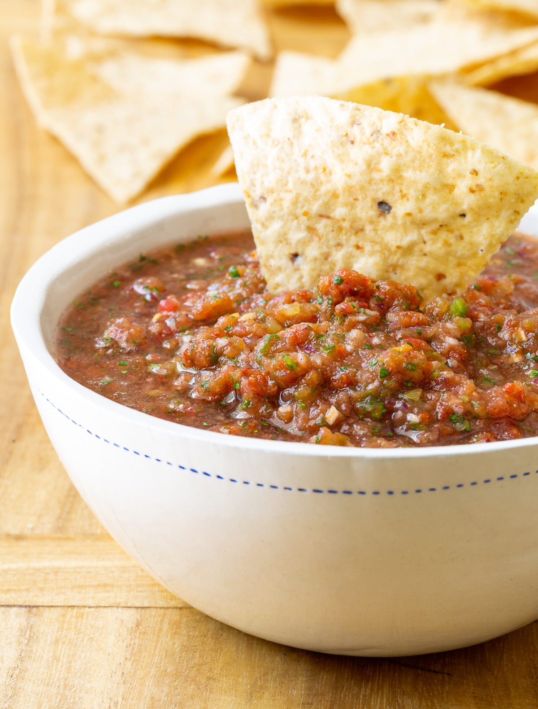

The best god damn no-bake salsa
Look it up, I dare you. There are hundreds of recipes for salsa on the internet now but
there weren't so many back in the day. It's hard to find the real quality shit these days and
I'm here to tell you, you've finally found it. This salsa will knock your socks off.
Ingredients
- 3~4 fresh Jalapeno peppers
- 1~2 fresh habanero peppers (or ghost peppers)
- 2 onions finely chopped (not blended)
- 2 tbsp/8 cloves of garlic minced
- 1 tbsp white sugar
- 2 tsp salt
- 1 tsp ground black pepper
- 1/2 cup cilantro minced
- 1~2 limes juiced
- 2 cans tomatoes
Directions
- Chop onions finely with knife, use blinder to mince washed jalapenos,
habaneros, garlic and cilantro.
- Place blended pepper mixture into a large bowl with onion, salt, sugar, pepper and lime juice.
- Pulse tomatoes to puree and add mixture
- Mix well, cover, chill for at one hour to allow flavors to blend